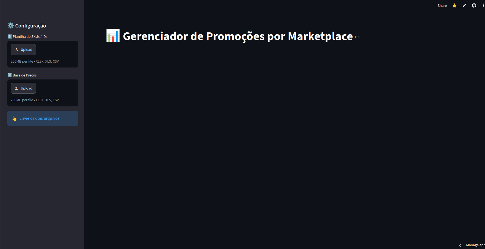

Data automation
Marketplace Promotions
Match product spreadsheets to price lists and export promotion-ready prices for each marketplace.
Statistics and Data Science · UFSCar

Undergraduate Researcher · CNPq · PET Statistics
I am a Statistics and Data Science undergraduate at the Federal University of São Carlos (UFSCar), with an expected graduation date of December 2028.
I am a member of PET Statistics and hold a CNPq undergraduate research scholarship. My research on genotype–phenotype graph learning is supervised by Prof. Thiago Rodrigo Ramos.
My interests include statistical modeling, machine learning, and graph learning. I work mainly with Python to build data analysis tools and research workflows.
CV in English · PDF

Data automation
Match product spreadsheets to price lists and export promotion-ready prices for each marketplace.

Undergraduate research · In progress
Research code for genomic data analysis, variable importance, and stability-based graph learning.

Applied data analysis
Collect listing information, compare products, and estimate net proceeds using the application’s fee assumptions.

Personal finance
Track income, expenses, and recurring bills with interactive dashboards and a Turso database.